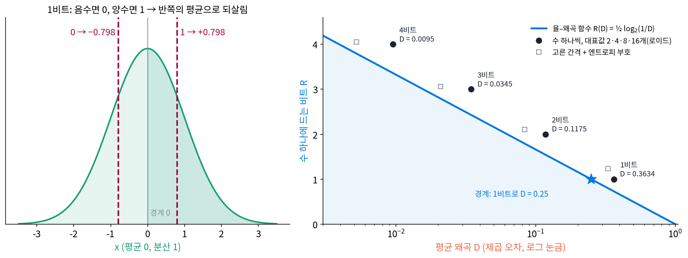
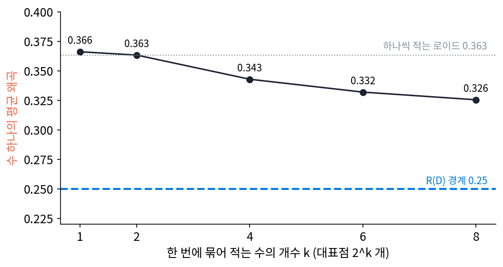

율–왜곡과 정보 병목: 무엇을 버려도 되는가
이 장의 물음
지금까지 다룬 압축은 대부분 무손실 압축이었다. 되살리면 원래 것과 한 글자도 다르지 않아야 했고, 그래서 평균 부호 길이는 엔트로피 밑으로 내려갈 수 없었다. 주성분 분석은 분산이 큰 축 몇 개만 남기고 나머지 축을 버렸으니 처음으로 무언가를 버린 셈인데, 버린 만큼 비트를 얼마나 아꼈는지는 아직 재지 않았다.
휴대폰으로 찍은 사진은 JPEG 로 저장되고, 음악은 MP3 나 AAC 로 듣고, 큰 언어 모델은 가중치를 4비트로 줄여 노트북에 올린다. 모두 원래 것과 조금 다르게 되살리는 손실 압축이다. 그런데 실수 하나를 정확히 적으려면 소수점 아래 자리가 끝없이 이어지니 비트도 끝이 없다. 조금 틀려도 된다고 하면 비트는 얼마로 줄어들까? 그리고 「조금 틀린다」는 무엇으로 재야 할까?
- 평균 0, 분산 1 인 수 하나를 1비트로 적으면 평균 제곱 오차는 얼마까지 줄일 수 있을까? 어떤 방법으로도 넘을 수 없는 한계가 있을까?
- 성질이 다른 수 여러 개를 한정된 비트로 함께 적을 때, 비트를 어느 수에 얼마나 나눠 줘야 할까?
- 제곱 오차가 아니라 「우산을 챙길지 판단하는 데 필요한 것을 잃었나」로 틀림을 잰다면 무엇이 달라질까?
- VAE 손실의 두 항, 되살리기 오차와 KL 항 앞에 붙은 계수 β 는 이 맞바꿈과 어떤 관계일까?
율–왜곡 함수: 틀려도 되는 만큼 비트가 준다
기온을 친구에게 문자로 알려 준다고 하자. 「23.417…도」를 끝까지 적을 수는 없으니 「23도」쯤에서 끊는다. 「따뜻함 / 추움」 한마디로 끊으면 1비트면 되지만 친구가 짐작하는 기온은 꽤 틀린다. 비트를 줄일수록 틀림이 커진다는 것은 누구나 알지만, 궁금한 것은 비트와 틀림을 맞바꾸는 한계다. 1비트를 쓰기로 했다면, 아무리 영리하게 적어도 이보다 덜 틀릴 수는 없다는 선이 있을까?
역사: 「충실도」라는 조건
섀넌(Claude Shannon)은 1948년 통신의 수학 이론을 내면서 이미 「조금 틀려도 되면 몇 비트인가」를 건드렸다. 소리나 영상처럼 값이 연속인 원천은 정확히 보내려면 비트가 끝없이 필요하므로, 그는 「얼마나 충실하게 되살려야 하는가」라는 기준(fidelity evaluation)을 먼저 정하고 그 기준 안에서 원천이 내는 정보의 속도를 재자고 했다. 논문의 뒷부분에 「충실도 평가에 대한 원천의 율(The Rate for a Source Relative to a Fidelity Evaluation)」이라는 제목의 절이 있다.
그 생각을 정리한 것은 11년 뒤다. 1959년 섀넌은 IRE 전국 학술 대회 기록에 「충실도 기준이 있는 이산 원천의 부호화 정리(Coding Theorems for a Discrete Source with a Fidelity Criterion)」를 실었고, 「율–왜곡 함수(rate distortion function)」라는 이름이 여기서 처음 나왔다고 전해진다. 무손실 압축에서 엔트로피가 하던 일을, 틀림을 허락한 압축에서는 이 함수가 맡는다.
분산 1 인 수를 1비트로
평균 0, 분산 1 인 가우스 분포에서 뽑은 수 x 를 하나씩 받는다. 보내는 쪽은 수 하나에 1비트만 쓸 수 있다. 1비트로 가를 수 있는 것은 두 가지뿐이니, 가장 자연스러운 방법은 x 가 0보다 작으면 0, 크면 1을 보내는 것이다. 받는 쪽은 0을 받으면 어떤 값으로 되살려야 할까?
0을 받았다는 것은 x 가 음수 쪽 절반 어딘가에 있다는 뜻이다. 그 절반 안에서 제곱 오차의 평균을 가장 작게 하는 값은 절반의 평균이다. 음수 쪽 절반의 평균은 −√(2/π) = −0.798 이다. 그래서 받는 쪽은 0이면 −0.798, 1이면 +0.798 로 되살린다. 이때 평균 제곱 오차는 1 − 2/π = 0.3634 다(표본 100만 개로 재면 0.3639). 다른 값으로 되살리면 더 나빠진다. ±1 로 되살리면 0.4045, ±0.5 로 되살리면 0.4529 다.
같은 생각을 대표값이 넷, 여덟, 열여섯 개인 경우로 넓히면, 칸의 경계와 대표값을 번갈아 고쳐 가장 좋은 경계와 대표값을 찾을 수 있다. 칸마다 대표값을 칸 안의 평균으로 두고, 이웃한 두 대표값의 가운데를 새 경계로 삼기를 되풀이하는 이 방법을 로이드 양자화기라 부른다. 양자화기는 연속인 수를 미리 정한 몇 개의 대표값 가운데 하나로 바꾸는 장치다(계산은 sources/rate-distortion/s1_rd.py).
| 비트 | 대표값 수 | 로이드 양자화기의 왜곡 | 같은 비트로 낼 수 있는 가장 작은 왜곡 |
|---|---|---|---|
| 1 | 2 | 0.3634 | 0.2500 |
| 2 | 4 | 0.1175 | 0.0625 |
| 3 | 8 | 0.0345 | 0.0156 |
| 4 | 16 | 0.0095 | 0.0039 |
표의 마지막 칸이 섀넌이 보인 한계다. 1비트로는 0.25, 비트가 하나 늘 때마다 그 4분의 1이다. 로이드 양자화기는 수 하나를 따로 적는 방법 가운데서는 가장 좋은 축에 들지만 한계에 닿지 못하고, 비트가 늘수록 한계와의 비가 1.45배에서 2.43배로 벌어진다.
평균 제곱 오차처럼 되살린 값과 원래 값의 차이를 평균 낸 값을 왜곡(distortion)이라 하고 D 로 적는다. 허용한 왜곡 D 안에서 수 하나를 적는 데 드는 가장 적은 평균 비트를 율–왜곡 함수 (틀려도 되는 만큼 줄어드는 비트, rate–distortion function)라 하고 R(D) 로 적는다. 「율」은 수 하나(글자 하나)를 적는 평균 비트, 부호화율이다. 섀넌은 율–왜곡 함수가 되살린 것과 원래 것 사이의 상호정보량을 가장 작게 한 값과 같음을 보였고, 분산 σ² 인 가우스 원천에서는 율–왜곡 함수를 손으로 구할 수 있다.
가우스 원천의 식 R(D) = ½ log₂(σ²/D) 을 거꾸로 풀면 D = σ² · 2^(−2R) 이다. 비트 하나를 더 쓰면 왜곡이 4분의 1로, 반 비트를 더 쓰면 절반으로 준다. 1비트를 넣으면 D = 1/4 이 나오고, 표의 마지막 칸이 그렇게 채워졌다.

한계에 닿는 방법은 무엇일까? 날씨를 하루씩 허프만 부호로 보내면 버리는 비트가 생기지만 여러 날을 묶어 보내면 엔트로피에 다가갔던 것과 같은 생각이 여기서도 통한다. 수를 k 개씩 묶어 k 차원의 점으로 보고, 2^k 개의 대표점 가운데 가장 가까운 것의 번호를 보내면 수 하나에 여전히 1비트다. 대표점을 k-평균(여러 차원의 로이드 방법)으로 배우게 하고 따로 뽑은 시험 점으로 재 보면, 묶음이 길어질수록 수 하나의 왜곡이 0.366(k = 1)에서 0.326(k = 8)으로 천천히 내려간다(s2_vq.py). 섀넌의 정리는 묶음을 한없이 길게 하면 0.25 까지 내려갈 수 있다고 말한다. 대신 대표점이 2^k 개로 늘어나니, 묶음의 부호표가 커지던 문제가 그대로 돌아온다.

ML에서: 가중치를 4비트로
큰 언어 모델을 노트북에서 돌리려면 가중치 하나를 16비트에서 4비트로 줄이는 일이 흔하다. 가중치를 되살렸을 때의 오차가 왜곡이고, 가중치 하나에 쓰는 비트가 율이다. 데트머스(Tim Dettmers)·파그노니(Artidoro Pagnoni)·홀츠먼(Ari Holtzman)·제틀모이어(Luke Zettlemoyer)의 QLoRA(NeurIPS 2023, 4비트로 줄여 얼려 둔 모델에 작은 덧붙임 행렬만 학습시키는 방법)는 학습된 가중치가 대체로 평균 0 인 정규분포를 따른다는 점에 기대어 NF4 라는 4비트 형식을 만들었다. 가중치를 64개씩 묶어 묶음 안의 가장 큰 절댓값으로 나눈 뒤, 미리 정해 둔 16개 값 가운데 가장 가까운 것으로 바꾼다. 16개 값은 고른 간격이 아니라 정규분포의 분위수(분포를 넓이가 같은 조각으로 자르는 경계)에서 뽑았고, 논문은 이 형식을 정규분포를 따르는 가중치에 대해 「정보 이론적으로 가장 좋은」 형식이라고 불렀다. 그 16개 값이 고른 간격의 단계보다 무엇을 얼마나 아끼는지는 아래 문제 3에서 직접 잰다.
문제 1. 키를 1비트로 알려 주기
우리 반 학생의 키는 평균 170cm, 표준편차 6cm 인 정규분포를 따른다고 하자. 친구가 한 학생의 키를 짐작해야 하는데, 나는 「평균보다 큰가 작은가」 1비트만 알려 줄 수 있다. (가) 친구는 「크다」를 들으면 몇 cm 로 짐작해야 하고, 평균 제곱 오차는 얼마인가? (나) 아무것도 듣지 못했을 때보다 얼마나 나아졌는가? (다) 1비트로 낼 수 있는 가장 작은 평균 제곱 오차는 얼마인가?

「크다」면 170보다 큰 쪽이니까… 키 큰 애들 중간쯤, 176cm 요. 표준편차 하나만큼 더한 거예요.

176 으로 짐작하면 170cm 를 갓 넘은 학생과 190cm 학생에게서 얼마나 틀리는지 평균을 내 봐야겠죠. 평균 제곱 오차를 가장 작게 하는 값은 무엇이었나요?

그 반쪽의 평균이에요. 분산 1 짜리에서 반쪽의 평균이 0.798 이었으니까, 표준편차 6을 곱하면 4.79cm. 176 이 아니라 174.79cm 로 짐작해야 해요.

표준편차 하나가 아니라 0.8개만큼이네요. 반쪽에는 170 바로 위에 몰린 학생이 많으니까 평균이 생각보다 안쪽이구나.
오차도 분산 1 일 때 0.3634 였으니까 36을 곱해서 13.08cm², 제곱근으로 3.62cm 쯤 틀려. 아무 말도 안 들으면 170 이라고만 할 테니 36cm², 6cm 틀리고.
(다)는요?

율–왜곡 함수로는 1비트에 분산의 4분의 1, 9cm² 예요. 3cm 쯤만 틀리는 거죠. 그런데 「크다 / 작다」 한마디로는 13.08 밑으로 못 가니까, 그 9cm² 는 여러 학생을 묶어서 한꺼번에 알려 줄 때 가능한 값이에요.

조원 평가를 「잘함 / 못함」 두 칸으로만 하면 칸 안에서 다 같은 점수가 되잖아요. 칸 경계를 어디에 두고 칸마다 몇 점을 줄지가 오차를 정하네요.
문제 2. 왜곡을 반으로, 그리고 분산보다 큰 허용 왜곡
분산 σ² = 1 인 가우스 원천을 생각한다. (가) 허용 왜곡을 0.5 에서 0.25 로 줄이려면 수 하나에 몇 비트가 더 드는가? 0.25 에서 0.125 로 줄일 때는? (나) 허용 왜곡을 1.2 로 하면 식 R(D) = ½ log₂(1/D) 은 −0.13비트를 준다. 무슨 뜻인가? (다) 2비트 로이드 양자화기의 왜곡 0.1175 를 율–왜곡 함수로 내려면 몇 비트면 되는가?
(가)는 ½ log₂(1/0.25) − ½ log₂(1/0.5) = 1 − 0.5 = 0.5비트요. 0.125 로 줄일 때도 1.5 − 1 = 0.5비트. 왜곡이 작을수록 더 비쌀 줄 알았는데 똑같네요.
왜곡이 어디서 시작하든 반으로 줄이는 값은 늘 같다는 거죠. 그럼 (나)는요?
음수 비트니까… 1.2 만큼 틀려도 되면 오히려 비트를 돌려받는다는 뜻인가요?

비트를 돌려받을 수는 없잖아. 식이 D < σ² 일 때만 맞는다는 조건을 뺀 거야. 아무것도 안 보내고 받는 쪽이 늘 0 이라고 답하면 왜곡은 분산과 같은 1 이야. 허용 왜곡이 1 보다 크면 그걸로 이미 충분하니까 0비트지.

그래요. 율–왜곡 함수는 D 가 분산에 닿는 곳에서 0이 되고 그 뒤로는 0에 머물러요. 받는 쪽이 평균만 알고 있어도 분산만큼은 맞히니까요. (다)는요?
0.1175 = 2^(−2R) 을 풀면 R = 1.545비트예요. 로이드 양자화기는 2비트를 썼으니 0.455비트를 더 쓰고 있어요. 1비트 때는 0.270비트를 더 썼으니까, 비트가 늘수록 수 하나씩 적는 방법이 버리는 비트가 커지네요.

대표값 네 개를 똑같이 자주 쓰지 않아서 그런 거 아니에요? 가운데 두 개가 훨씬 자주 나올 텐데, 그럼 부호 길이를 다르게 주면 2비트보다 줄겠네요.

좋은 짐작이에요. 대표값 넷이 쓰이는 비율의 엔트로피는 1.911비트예요. 엔트로피 부호를 붙이면 그만큼은 아끼지만 1.545 까지는 못 가요. 나머지는 수를 묶어서 적어야 줄어들어요.

해석학에서 오차를 반으로 줄일 때마다 항을 같은 수만큼 더 써야 하는 급수가 있었어요. 비트도 오차를 반으로 줄이는 값이 늘 반 비트로 같네요.
문제 3. NF4 와 고른 4비트
분산 1 인 정규분포 가중치 128만 개를 64개씩 묶어, 묶음 안의 가장 큰 절댓값으로 나눈 뒤 4비트로 바꾼다. NF4(정규분포의 분위수에서 뽑은 16개 값)로 바꾸면 평균 제곱 오차가 0.00845, −1 과 1 사이를 고른 간격으로 나눈 15단계로 바꾸면 0.01157 이다. 단계가 실제로 쓰인 비율의 엔트로피는 NF4 가 3.884비트, 고른 단계가 3.499비트다. (가) 두 형식의 왜곡을 율–왜곡 함수의 4비트 한계와 견줘라. (나) 고른 단계의 엔트로피가 4비트보다 한참 작은 까닭은? (다) 묶음마다 따로 적는 「가장 큰 절댓값」은 비용이 없는가?
율–왜곡 함수로 4비트면 2^(−8) = 0.0039 예요. NF4 는 0.00845 니까 두 배 넘게 틀리고, 고른 단계는 세 배쯤이요.
같은 4비트인데 고른 단계가 더 틀리는 까닭이 (나)와 이어져 있어요. 엔트로피가 3.499 라는 건 무슨 뜻이죠?
열다섯 단계를 똑같이 쓰면 엔트로피가 log₂ 15 = 3.907비트여야 하는데, 3.499 밖에 안 된다는 건 몇 단계만 많이 쓰고 나머지는 거의 안 쓴다는 거예요. 정규분포라 가중치가 0 근처에 몰려 있으니까 가운데 단계만 붐비고, 끝 단계는 묶음의 최댓값 하나가 쓸 때 말고는 거의 비어 있어요.
아, 잘 안 쓰는 단계에 부호를 낭비하는 거네요. NF4 는 분위수로 뽑았으니까 단계마다 들어오는 가중치 수가 비슷해지고, 그래서 엔트로피가 4비트에 더 가까운 3.884 고요.
그래요. 16단계를 고르게 써야 4비트만큼 정보를 담아요. (다)는요?
묶음마다 최댓값을 16비트로 적으면 64개에 나눠서 가중치 하나에 0.25비트가 더 들어요. 그러니까 NF4 는 사실 4.25비트쯤 쓰고 있는 거예요. 묶음 없이 분산을 안다고 친 로이드 4비트가 0.0095 인데 NF4 가 0.00845 로 더 작은 것도, 묶음마다 최댓값이라는 정보를 더 받았기 때문이고요.
조별 과제 점수를 조마다 「우리 조 최고점」 기준으로 다시 매기는 거네요. 조마다 기준 하나를 더 적어야 하지만 조 안에서는 촘촘하게 가를 수 있어요.